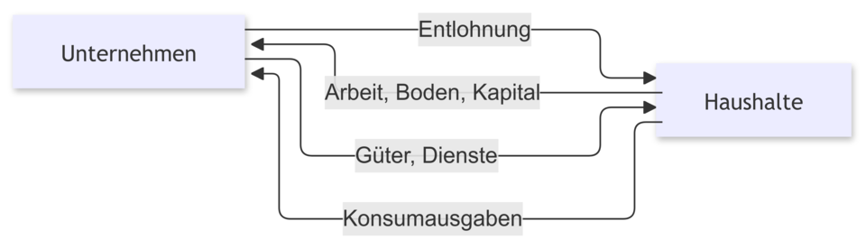

Chapter 2 Der Gegenstand der Wirtschaft
2.1 Bedürfnisse
Jeder Mensch hat Bedürfnisse, die er durch verschiedenartige Güter befriedigt haben muss oder will. Unter Bedürfnissen versteht man in der Wirtschaftswissenschaft alle körperlichen und geistigen Mangelgefühle, die der Mensch bestrebt ist zu beseitigen. Güter werden in der Wirtschaftswissenschaft sehr weit definiert. Güter sind im umfassenden Sinne alle Mittel oder Leistungen, die der Bedürfnisbefriedigung dienen. Die hohe Anzahl und die Unterschiedlichkeit seiner Bedürfnisse macht es den Menschen unmöglich, alle Güter zu deren Befriedigung selbst herzustellen. Diese Tatsache zwingt die Menschen zur Arbeitsteilung und zum Tausch. Außerdem ändern sich Bedürfnisse in Abhängigkeit von der Entwicklung der Umwelt sehr stark. Diese Veränderung treibt die Entwicklung der Gesellschaft voran.
Bedürfnisse können zunächst unterteilt werden zwei Kategorien, nämlich in Bedürfnisse, die der Mensch befriedigen muss, um seine Existenz zu sichern und Bedürfnisse, die über die Existenzsicherung hinausgehen. Der Mensch braucht zur Existenzsicherung mindestens Nahrung, Kleidung, Wohnung. Diese Bedürfnisse werden Existenzbedürfnisse, Defizitbedürfnisse oder Dringlichkeitsbedürfnisse genannt. Außerdem hat er zahlreiche Wünsche, deren Erfüllung dazu beiträgt, sein Leben angenehm zu gestalten, z.B. zu lesen, zu reisen oder sich künstlerisch zu betätigen. Diese werden unter dem Begriff Kulturbedürfnisse, Wachstumsbedürfnisse oder Luxusbedürfnisse zusammengefasst. Die Grenzen zwischen den Bedürfnisarten sind fließend. Z.B. zählen Kulturtechniken wie Lesen und Schreiben in den meisten Ländern der Erde zu den Existenzbedürfnissen, in Ländern mit einem geringen Bildungsstand allerdings können sie auch heute noch zu den Luxusbedürfnissen zählen.
Eine genauere Einteilung der Bedürfnisse nach fünf Kategorien nahm der amerikanische Psychologe Maslow 1943 vor. Dieses Modell findet bis heute Anwendung insbesondere im Marketing.
Die Maslow-Pyramide (eigentlich: Bedürfnishierarchie) ist ein Modell, das zur Beschreibung der Motivationen von Menschen dient. Die menschlichen Bedürfnisse bilden die “Stufen” der Pyramide. Jede Stufe baut auf der darunterliegenden Stufe auf. Der Mensch versucht zuerst, die Bedürfnisse der unteren Stufe zu befriedigen, bevor er Bedürfnisse der nächsten Stufen wahrnehmen kann und zu befriedigen versucht und so weiter.
Beispiele für die Stufen der Pyramide:
| Bedürfnisse | Beispiele |
|---|---|
| Bedürfnis nach Selbstverwirklichung | Individualität, Talententfaltung, Altruismus, Güte, Kunst |
| Bedürfnis nach sozialer Anerkennung | Status und Statussymbole, Wohlstand, Geld, Macht, berufliche Karriere, sportliche Siege |
| Bedürfnis nach sozialen Beziehungen | Liebe, Partnerschaft, Familie, Freundeskreis, Kollegenkreis |
| Bedürfnis nach Sicherheit | sichere Wohnung, fester Arbeitsplatz, Gesetze, Religion (Lebensregeln und Sanktionen), eine funktionierende Verwaltung, Planbarkeit des Lebens |
2.2 Bedarf
Wenn das Mangelgefühl zur Entscheidung für ein bestimmtes Gut führt, mit dem man das Mangelgefühl beseitigen kann, dann kann man dieses Gut als Bedarf definieren. Unter einem Bedarf versteht man somit ein konkretisiertes Bedürfnis.
Entsprechend der Klassifizierung der Bedürfnisse kann auch der Bedarf nach der Dringlichkeit in Existenzbedarf und Wahlbedarf eingeteilt werden.
Eine zweite Klassifizierung des Bedarfes erfolgt nach der Höhe des benötigten Einkommens. Wenn ein Mensch z.B. Durst hat, dann kann er sich im Normalfall eine Flasche Wasser kaufen. Diese Art Bedarf nennt man Individualbedarf.
Wenn sich ein Einwohner einer Stadt wünscht, in einem attraktiven und sicheren Wohnort zu leben, dann kann er nicht eine Oper, ein Museum, eine U-Bahn und einen Marktplatz mit restaurierten Gebäuden, eine Schule und eine Armee kaufen, da sein Einkommen dazu nicht reicht. Diese Art Bedarf nennt man Kollektivbedarf. Zur Befriedigung des Kollektivbedarfes sind Machtstrukturen nötig, die einerseits Beiträge von vielen Mitgliedern dieser Menschengruppe fordern und andererseits diese Güter dann zur Verfügung stellen. Welche Güter kollektiv zur Verfügung gestellt werden, wie sie finanziert und verteilt werden, ist abhängig von der Umwelt, der Geschichte, den Machtstrukturen der Menschengruppe usw.
Die Kriterien dieser zwei Gruppen von Bedürfnisse ist nicht so präzis, weil es auch Möglichkeit gibt, dass Bedürfnisse, die hohe benötigte Einkommen braucht, auch zur Individualbedarf gehört, wie zum Beispiel, eine treuer Operation von ein Millionär. Deswegen sollten wir die Kriterien verändern.(wie nach der Nutznießergruppe)
Der Bedarf kann drittens danach klassifiziert werden, wer ihn befriedigt. Wenn alle Wirtschaftssubjekte in zwei Gruppen eingeteilt werden können: Haushalte und Unternehmen, dann produzieren Haushalte per Definition zur Befriedigung des Eigenbedarfes und Unternehmen zur Befriedigung des Fremdbedarfes.
2.3 Nachfrage
Unter zwei Voraussetzungen wird der Bedarf schließlich zur Nachfrage. Erstens, wenn der Nachfrager infolge eines Tausch- oder Kaufentschlusses auf einem Markt auftritt und auf ein Angebot hofft. Das heißt, wenn der Bedarf marktwirksam wird. Nachfrage ist immer das Auftreten auf einem Markt. Die zweite Voraussetzung besteht darin, dass der Nachfrager bereit ist, eine bestimmte Menge Tauschgut einzusetzen oder einen Preis für seine Bedürfnisbefriedigung zu bezahlen, wenn er also über Kaufkraft bzw. über ein bestimmtes Einkommen verfügt.
2.4 Güter
Das Objekt der Verteilung sind Güter. Die Eigenschaft des Gutes haftet einem Gegenstand nicht von Natur aus an. Als Gut bezeichnet man in der Wirtschaftswissenschaft alle Mittel oder Leistungen, die der Bedürfnisbefriedigung dienen. (Siehe oben) Das Fachwort ist zentrales Element in der Wissenschaftssprache der Wirtschaftswissenschaften und hat einen großen Bedeutungsumfang. Als „Gut” wird de facto alles erfasst, was irgendeinem Wirtschaftsakteur irgendeinen Nutzen stiftet. Da alles, philosophisch gesehen, irgendeinen Nutzen hat, kann somit alles zum Gut werden. Güter, die aus der Sicht des Betrachters unerwünscht sind, wie z.B. Luftverschmutzung, Lärm, eine Krankheit, werden als „Schlecht” (Ungut oder Bad) bezeichnet.
Ebenso wie Bedürfnisse und der Bedarf können auch Güter nach der Dringlichkeit in Existenzgüter und Luxusgüter eingeteilt werden. Dieser Klassifikation liegt allerdings ein eindeutiges mathematisches Kriterium zugrunde. Diese Klassifikation wird in der Lektion “Elastizität” dargestellt.
Güter werden entsprechend den Bedürfnissen der unterschiedlichen Teilgebiete der Wirtschaftswissenschaften außerdem nach vielen anderen Kriterien klassifiziert. Das folgende Beispiel zeigt das formale Vorgehen bei Klassifizierungen am Beispiel eines Apfels.
Gegenstand der Klassifizierung: Apfel
| Kriterium oder Merkmal | Merkmalsausprägung | Wer hat ein Interesse an dieser Klassifizierung? |
|---|---|---|
| Farbe | rot, gelb, grün | ein Maler |
| Geschmack | süß, sauer | ein Bäcker |
| Reifegrad | reif, unreif | ein Koch(ein Verkäufer:in) |
| Graumen | knackig,nicht knackig | eine Kunde |
| Herstellungsort | Europa, Asien | eine Kunde |
| Verwendungszweck | essen, Alkohol produzieren | ein Hersteller |
Güterklassifikationen tauchen im realen Alltag in vielen Formen auf. Wenn man sich z.B. in einem Supermarkt umschaut, so kann man sehen, dass Güter nach verschiedenen Zwecken gruppiert werden. Aus Gründen der Übersichtlichkeit teilt man Güter in Nahrungsmittelgruppen ein: Obst, Gemüse, Getränke, Fleisch, Käse, Backwaren usw. Aufgrund ihrer Lagereigen-schaften findet man Güter, die gekühlt werden müssen, im Kühlregal, andere nicht. Güter, die eine hohe Gewinnspanne versprechen, werden in Augenhöhe oder in der Nähe der Kasse präsentiert, andere ganz unten oder ganz oben usw.
Im Folgenden sollen Güterklassifikationen dargestellt werden, die für die wirtschaftswissenschaftliche Betrachtung von Gütern eine Bedeutung haben.
2.4.1 Knappheit
In der Allgemeinen Volkswirtschaftslehre ist die Unterscheidung von freien und knappen Gütern von hoher Bedeutung. Ein Gut ist frei, wenn es in einem bestimmten Gebiet zu einer bestimmten Zeit in so großer Menge vorhanden ist, dass jeder Nachfrager so viele Einheiten des Gutes konsumieren kann, wie er will, bzw. bis seine Sättigungsgrenze erreicht ist. Bei freien Gütern ist also das Angebot größer als die Nachfrage. Typische Beispiele dafür sind Güter, die uns die Natur schenkt, wie die Luft zum Atmen, Sonnenlicht oder Sand in der Wüste. Da freie Güter in einem ausreichenden Maße zur Verfügung stehen, haben sie keinen Preis.
Im Gegensatz dazu stehen knappe Güter nicht in einem ausreichenden Maße zur Verfügung. Knappheit ist relativ. Sie bedeutet nicht absolute Seltenheit (eine kleine Menge oder nur ein Exemplar) wie z.B. ein komplettes Saurierskelett, sondern sie beschreibt nur das Verhältnis von Angebots- und Nachfragemenge. Wenn die Nachfragemenge größer als die Angebotsmenge ist, dann handelt es sich um ein knappes Gut. Bei knappen Gütern müssen Nachfrage und Angebot durch Wirtschaft zum Ausgleich gebracht werden. Aus diesem Grund nennt man diese Art von Gütern wirtschaftliche Güter. Sie haben einen Preis. Je knapper ein Gut ist, desto höher ist sein Preis, d.h., wenn bei gleichbleibendem Angebot die Zahl der Nachfrager oder die nachgefragte Menge steigt, steigt auch der Preis. Der Preis ist damit Indikator für die Knappheit des Gutes.
Güter, die ursprünglich als frei betrachtet wurden, können aus verschiedenen Gründen knapp werden. Zum Beispiel:
- durch die Umweltverschmutzung oder Übernutzung
- durch die Schaffung von Eigentumsrechten
- allerdings auch durch Veränderungen der Umweltbedingungen, die der Mensch nicht beziehungsweise nicht direkt verursacht hat, z.B. Naturkatastrophen.
2.4.2 Gegenständlichkeit
Man unterscheidet in der wirtschaftswissenschaftlichen Fachsprache materielle Güter (auch Sachgüter, Waren) und immaterielle Güter. Letztere lassen sich wiederum unterteilen in Dienstleistungen (z.B. ärztliche Behandlung) und ideelle Güter (z.B. Patente, Rechte an einem Bild, an einem Text). Auch hier ist der Übergang fließend. Ein Fahrzeug ist zweifelsfrei ein Sachgut, wogegen eine Fahrzeuginspektion eine Dienstleistung ist, beides aber oft als ein Gut verkauft wird.
2.4.2Ü1 Fertigen Sie eine Grafik zur Struktur des oberen Textes an.

Typische Dienstleistungen unterscheiden sich aufgrund folgender Eigenschaften von materiellen Gütern:
- Sie sind nicht lagerbar.
- Sie können nicht als Eigentum erworben werden.
- Produktion und Konsum erfolgen zur gleichen Zeit, also unmittelbar.
- Sie können nicht als Wertspeicher genutzt werden.
Diese Klassifizierung zeigt ein Definitionsproblem auf. Der Begriff „Gut bedeutet in der Allgemeinsprache ein materielles Gut, auch “Besitz”. In der Fachsprache der Wirtschaftswissenschaft versteht man unter einem Gut alles, was Bedürfnisse befriedigen kann. Der Bedeutungsumfang des Begriffes ist in der Fachsprache also viel größer als in der Allgemeinsprache.
2.4.3 Verwendungszweck und Nutzungsdauer
2.4.3.1 Verwendungszweck
Diese Unterscheidung ist von allgemeinem wirtschaftlichem Interesse und basiert auf dem Modell des einfachen Wirtschaftskreislauf. Unterschieden werden Konsumgüter und Produktionsgüter. Konsumgüter werden zum Zwecke des Konsums, somit der letzten Nutzung im Wirtschaftskreislauf, nachgefragt, Produktionsgüter dagegen zum Zwecke der Produktion. Die Nachfrager werden nach diesem Kriterium unterschieden in private Haushalte (fragen Konsumgüter nach) und Unternehmen (fragen hauptsächlich Produktionsgüter nach). Konsumgüter dienen der unmittelbaren Bedürfnisbefriedigung, Produktionsgüter dagegen der Produktion von Konsumgütern und somit nur der mittelbaren Bedürfnisbefriedigung.
Das Modell vom einfachen Wirtschaftskreislauf

2.4.3.2 Nutzungsdauer
Man unterscheidet hier langfristig(dauerhaft) und kurzfristig(nicht dauerhaft) nutzbare Güter. Güter, die über einen längeren Zeitraum genutzt werden können, sind Gebrauchsgüter. Güter, die nur kurzzeitig verwendet werden können oder Güter, die nur einmal eingesetzt werden können und bei der Benutzung untergehen, sind Verbrauchsgüter.
Im Haushalt, also in der Verwendung als Konsumgut, spielt diese Klassifikation keine Rolle. Für Produktionsgüter ist diese Klassifikation allerdings sehr wichtig. Sie spielt in der Betriebswirtschaftslehre, besonders dem Rechnungswesen, eine entscheidende Rolle. Gebrauchsgüter sind Güter, die dauerhaft im Unternehmen Verwendung finden sollen. Das sind beispielsweise Gebäude, Maschinen und Fahrzeuge. Sie werden auch Investitionsgüter genannt und werden im Anlagevermögen in der Bilanz erfasst. Ihr Wert wird über ihre geplante Nutzungsdauer hinweg abgeschrieben. Verbrauchsgüter sind Güter, die durch die Produktion in ein neues Produkt eingehen oder für die Produktion benötigt werden. Wenn sie lagerbar sind, werden sie im Umlaufvermögen in der Bilanz erfasst. Wenn sie nicht lagerbar sind, also wenn sie sofort verbraucht oder eingesetzt werden müssen, zählen sie zum Aufwand und erscheinen nicht in der Bilanz.
Da auch hier Übergänge fließend sind, werden im Rechnungswesen zwei Vereinfachungen vorgenommen. Als Verbrauchsgüter gelten über die obere Definition hinaus alle Güter, die weniger als ein Jahr lang nutzbar sind, und alle Güter, die weniger als 150 € netto (ohne Umsatzsteuer) gekostet haben. Diese Güter werden sofort als aufwand betrachtet und sie müssen nicht abgeschrieben werden, auch wenn man sie lange im Unternehmen einsetzen kann.
Das Kriterium der „Nutzungsdauer” spiegeln sich auf der Aktivseite und auf der Passivseite der Bilanz wider, als Beispiel ist eine stark vereinfachte Übungsbilanz zu sehen:
Bilanz zum 31.12.01
| Aktiva | Aktiva | Passiva | Passiva |
|---|---|---|---|
| Anlagevermögen(AV) | Eigenkapital(EK) | ||
| Grundstücke und Gebäude | \(50.000\) | ||
| Maschinen und Anlagen | \(10.000\) | ||
| Fahrzeuge | \(20.000\) | ||
| Betriebs- und Geschäftsausstattung(BGA) | \(3.000\) | ||
| Umlaufvermögen(UV) | Fremdkapital(FK) | ||
| Roh-, Hilfs-, Betriebsstoffe(RHB) | \(7.000\) | Darlehensverbindlichkeiten(DV) | \(40.000\) |
| Waren | \(8.000\) | Verbindlichkeiten aus Lieferungen und Leistungen(Verb LuL) | \(5.000\) |
| Forderungen aus Lieferung und Leistungen(Ford LuL) | \(2.000\) | ||
| Bank | \(4.000\) | ||
| Kasse | \(800\) | ||
| Bilanzsumme | Bilanzsumme |
Prinzipiell kann man für die Aktivseite sagen, je weiter oben der Posten in der Bilanz steht, desto höher ist die geplante Nutzungsdauer und desto niedriger ist die Liquidität des Postens. Die Kasse ist also bereits liquide, wogegen es sehr viel länger dauert, ein Gebäude oder ein Fahrzeug zu verkaufen, bis das Unternehmen wieder liquide ist.
Für die Passivseite gilt, je weiter oben der Posten steht, desto höher ist die Fristigkeit des Kapitals, d.h., desto länger soll der Posten im Unternehmen verbleiben. Das Eigenkapital soll über die gesamte Lebensdauer (Totalperiode) im Unternehmen sein, die Darlehensverbindlichkeiten laufen je nach Kreditvertrag einige Jahre und eine Verbindlichkeit aus Lieferungen und Leistungen / Lieferantenverbindlichkeit besteht je nach Liefervertrag einige Wochen, bis sie fällig ist. Dabei werden die Darlehensverbindlichkeiten verzinst, Lieferantenverbindlichkeiten im Normalfall nicht.
Die Passivseite liefert Informationen darüber, woher das Kapital im Unternehmen kommt (Kapitalherkunft) und die Aktivseite darüber, wofür das Kapital verwendet wurde (Kapitalverwendung). Die Reihenfolge der Bilanzposten ist gesetzlich vorgeschrieben im § 266 HGB. Deshalb darf die Reihenfolge auch in der Übungsbilanz nicht variiert werden. Das EK ist nur bei Unternehmensgründung eine bestimmte Geldmenge, die dazu eingesetzt wird, um AV und UV zu kaufen. Später kann das EK nur noch als Differenz betrachtet werden, die sich aus folgender Berechnung ergibt: \(\text{AV} + \text{UV} - \text{FK} = \text{EK}\). Die Bilanzsummen sind also auf beiden Seiten immer gleich groß. In den Buchungsübungen ist es erlaubt und erwünscht, Abkürzungen zu verwenden. Beide Kriterien können in Tabellenform dargestellt werden:
| Nutzungsdauer\Verwendungszweck | für Produktion | für Konsum |
|---|---|---|
| langfristig | Investitionsgut | Gebrauchsgut |
| kurzfristig | Roh-, Hilfs-, Betriebsstoffe | Verbrauchsgut |